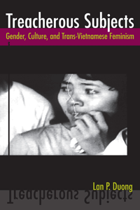

<body bgcolor="#FFFFFF" text="#000000" link="#0000FF" vlink="#CC0000" alink="#CC0000"><center><hr width="350" size="1" align="center" noshade>How gender shapes cultural production in Viet Nam and its diaspora<hr width="350" size="1" align="center" noshade><p><a href="https://cdcshoppingcart.uchicago.edu/Cart/ChicagoBook.aspx?ISBN=9781439901779&&PRESS=temple" target="_top">Buy this book!</a> | <a href="https://cdcshoppingcart.uchicago.edu/Cart/Cart.aspx?PRESS=temple" target="_top">View Cart</a> | <a href="https://cdcshoppingcart.uchicago.edu/Cart/Cart.aspx?PRESS=temple" target="_top">Check Out</a></p><p></p></center><!--none//--><h1>Treacherous Subjects</h1>
<H2>Gender, Culture, and Trans-Vietnamese Feminism</H2>
<h3>Lan P. Duong</h3>
<P>cloth 1-43990-177-5 $80.50, Apr 12, <FONT COLOR=#990033></FONT>
<br>paper 1-43990-178-3 $28.95, Apr 12, <FONT COLOR=#990033>Available</FONT>
<br>Electronic Book 1-43990-179-1 $28.95 <FONT COLOR=#990033></FONT>
<BR> 264 pp
6x9
15&nbsp;halftones
</P><BLOCKQUOTE><I>"Duong's </I>Treacherous Subjects<I> inaugurates </I>sui generis<I> the field of diasporic Vietnamese feminism. She instructs us what objects and subjects to look at and study, how they might be comprehended, and why such inquiry is so crucial for all of us. I can't think of another cultural studies project in a decade that has accomplished so much in one book. Duong's careful consideration of both filmic and literary genres demonstrates her explicatory erudition. </I>Treacherous Subjects<I> is a monumental work upon which a generation of future students and scholars will build. It will establish Duong as the principal intellectual figure of the field she will have helped to establish."</I>
<br>&#151<b>James Kyung-Jin Lee</b>, Chair and Associate Professor, Department of Asian American Studies, University of California, Irvine</I></BLOCKQUOTE>
<P><i>Treacherous Subjects</i> is a provocative and thoughtful examination of Vietnamese films and literature viewed through a feminist lens. Lan Duong investigates the postwar cultural productions of writers and filmmakers, including Tony Bui, Trinh T. Minh-ha, and Tran Anh Hung.
<P>Taking her cue from the double meaning of "collaborator," Duong shows how history has shaped the loyalties and shifting alliances of the Vietnamese, many of whom are caught between opposing/constricting forces of nationalism, patriarchy, and communism. Working at home and in France and the United States, the artists profiled in <i>Treacherous Subjects</i> have grappled with the political and historic meanings of collaboration. These themes, which probe into controversial issues of family and betrayal, figure heavily in fictions such as the films <i>The Scent of Green Papaya</i> and <i>Surname Viet Given Name Nam</i>.
<P>As writers and filmmakers collaborate, Duong suggests that they lay the groundwork for both transnational feminist politics and queer critiques of patriarchy.
<BR>&nbsp;<h2>Excerpt</h2><P>Excerpt available at <a href="http://www.temple.edu/tempress">www.temple.edu/tempress</a></p>
<BR>&nbsp;<h2>Reviews</h2>
<p><I>"</I>Treacherous Subjects<I> offers a new reading of literary and filmic texts by Vietnamese and Vietnamese diasporics that rethinks the nation in its gendered, sexualized, and political economic representations. Duong argues that Vietnamese writers and filmmakers from Vietnam, France, and the U.S. evoke the family to imagine the body politic, which is now a transnational one. Duong's methods are very innovative. In each chapter, she pairs works by artists in different national contexts. Her approach allows for new ways to think through a number of issues with political import. I know of few books that put forth this reading which problematizes the nation and its heteronormative boundaries as effectively as this work does."</I><br>&#151<b>Nguyen-vo Thu-huong</b>, Associate Professor, Asian Languages and Cultures, and Asian American Studies, UCLA
<p><i>"[The book] makes a considerable and commendable contribution to the interdisciplinary fields of Asian-American literary studies, Southeast Asian-American studies, and American cultural studies.... </i>Treacherous Subjects<i> confirms and extends the field’s multidisciplinary vistas by way of Vietnamese and Vietnamese-American cultural production, which include film, literature, and popular culture.... [It] skillfully juxtaposes the divergent critical receptions of such work vis-à-vis domestic and internationalist politics."</i> <br>&#151<b><i>College Literature</i></b>
<p><i>"</i>Treacherous Subjects<i> productively expand[s] the geographies of American literature by looking at not only discursive but also material circulations of women across oceans.... Duong offer[s] much food for thought in relation to feminism, cultural production, and the collisions of knowledge produced by area and ethnic studies…. [She] demonstrate[s] how writing and art mediates the construction of femininity on a transnational scale, where the former ‘third world’ is central to understanding current global processes of subjectivity and subjection."</i> <br>&#151<b><i>American Literature</i></b>
<BR>&nbsp;<h2>Contents</h2><P>
<p>Acknowledgments
<br>Introduction
<br>1. Manufacturing Feminine Virtue for the Diaspora: The Films of Tony Bui
and Tran Anh Hung
<br>2. Colonial Histories, Postcolonial Narratives: Traitors and Collaborators
in Vietnamese Women’s Diasporic Literature
<br>3. Heroines and Traitors: The Gendered Fictions of &#272;&#7863;ng Nh&#7853;t Minh and D&#432;&#417;ng Th&#432; H&#432;&#417;ng
<br>4. Traitors and Translators: Reframing Trinh T. Minh-ha’s <i>Surname Viet
Given Name Nam</i> and <i>A Tale of Love</i>
<br>5. Betraying Feminine Virtue: Collaborative Effects and the Transnational Circuits of Vietnamese Popular Culture
<br>Conclusion: Family Politics and the Art of Collaboration
<br>Notes
<br>Works Cited
<br>Index
</P><BR>&nbsp;<H2>About the Author(s)</H2>
<P><b>Lan P. Duong</b> is Associate Professor of Media and Cultural Studies at the University of California, Riverside.</P>
<BR><H2>Subject Categories</H2>
<p><A HREF="/tempress/literature.html" TARGET="_top">Literature and Drama</a>
<BR><A HREF="/tempress/asian_amer.html" TARGET="_top">Asian American Studies</a>
<BR><A HREF="/tempress/cultural.html" TARGET="_top">Cultural Studies</a>
</p>
<BR><h2 class="inpageheading">In the series</H2>
<P><I><a href="http://www.temple.edu/tempress/asam_history.html" onMouseOver="window.status='Click for other books in this series!'; return true;" onMouseOut="window.status=''; return true;" target="_top">Asian American History and Culture</a></i>, edited by K. Scott Wong, Linda Trinh Võ, and Cathy Schlund-Vials.
</p><p>Founded by Sucheng Chan in 1991, the <I>Asian American History and Culture</I>, series has sponsored innovative scholarship that has redefined, expanded, and advanced the field of Asian American studies while strengthening its links to related areas of scholarly inquiry and engaged critique. Like the field from which it emerged, the series remains rooted in the social sciences and humanities, encompassing multiple regions, formations, communities, and identities. Extending the vision of founding editor Sucheng Chan and emeriti editor Michael Omi and David Palumbo-Liu, series editors K. Scott Wong, Linda Trinh Võ, and Cathy Schlund-Vials continue to develop a foundational collection that embodies a range of theoretical and methodological approaches to Asian American studies.</p>
<p align="center"><a href="https://cdcshoppingcart.uchicago.edu/Cart/ChicagoBook.aspx?ISBN=9781439901779&&PRESS=temple" target="_top">Buy this book!</a> | <a href="https://cdcshoppingcart.uchicago.edu/Cart/Cart.aspx?PRESS=temple" target="_top">View Cart</a> | <a href="https://cdcshoppingcart.uchicago.edu/Cart/Cart.aspx?PRESS=temple" target="_top">Check Out</a></p><p><font face="Arial" size="1"><a href="copyright.html" onMouseOver="window.status='Web Copyright Policy';return true;" onMouseOut="window.status=''" title="Web Copyright Policy">&copy;</a> 2015 <a href="http://www.temple.edu" target="new" onMouseOver="window.status='Link to Temple University home page';return true;" onMouseOut="window.status=''" title="Link to Temple University home page">Temple University</a>. All Rights Reserved. http://www.temple.edu/tempress/titles/2067_reg.html</font></p>